太陽（The Sun） いちばん身近で、いちばんなぞの多い恒星
太陽は、太陽系の中心にある恒星です。
地球を照らす光源というだけではありません。惑星も小惑星も彗星も、太陽の重力に引かれて動いているため、 太陽系全体の運動や環境を支配する、紛うことなき太陽系の中心天体。
我々にとっては、「欠かせない存在」なのです(´ᯅ` )☀️

1基本プロフィール
| 項目 | 情報 |
|---|---|
| 天体分類 | 恒星（主系列星） |
| スペクトル型 | G2V |
| 通称 | 黄色矮星 |
| 年齢 | 約46億年 |
| 半径 | 約69万5,700 km |
| 直径 | 約139万 km（地球の約109倍） |
| 質量 | 約1.989×10³⁰ kg（地球の約33万倍） |
| 平均密度 | 約1.408 g/cm³ |
| 地球からの平均距離 | 約1億4,960万 km（約1 AU） |
| 光が地球に届く時間 | 約8分20秒 |
| 光度 | 約3.83×10²⁶ W |
| 表面温度（光球） | 約5,500℃ |
| 中心温度 | 約1,500万℃ |
| おもな成分 | 水素・ヘリウム |
太陽の質量は、太陽系全体の約99.86％。体積では、地球が約130万個も入ります。
「G2V」にも意味があります。
- G：表面温度や光の特徴による分類で、G型星の仲間
- 2：G型の中での、細かい分類
- V：中心で水素の核融合を続ける、主系列星
太陽はそれほど大きな恒星ではありませんが、恒星の価値は大きさやエネルギー量では決まりません。
2どうやって生まれたの？
太陽が生まれたのは、約46億年前。巨大な分子雲の一部が、重力で縮んだのがはじまりです。
- 水素やヘリウムを主成分とする、巨大なガスの雲があった
- 何かのきっかけで、雲の一部が縮みはじめた
- 物質が中心に集まって、密度と温度が上がった
- 周囲に残った物質が、円盤状に広がった
- 中心の温度と圧力が十分に高くなり、水素の核融合がはじまった
円盤に残った物質から、地球や木星などの惑星ができました。惑星が、ほぼ同じ平面の上を公転しているのは、このためです。
3何でできている？
| 元素 | 質量比の目安 |
|---|---|
| 水素 | 約71％ |
| ヘリウム | 約27％ |
| その他（酸素・炭素・ネオン・鉄など） | 約2％ |
天文学では、水素とヘリウムより重い元素を、まとめて「金属」と呼ぶことがあります。日常の「金属」とは別の、天文学ならではの呼び方です。
太陽は、固体でも液体でもなく、プラズマが主体です。だから、地面のような固い表面はありません。
4太陽の内側と大気
太陽は、内側から外側へ、いくつもの層に分けられます。
| 層 | 特徴 |
|---|---|
| 核 | 約1,500万℃。核融合が起きている |
| 放射層 | 光子がエネルギーを運ぶ |
| 対流層 | プラズマの上下運動で運ぶ |
| 光球 | 約5,500℃。「表面」と呼ばれる |
| 彩層 | 赤っぽく見える、薄い大気 |
| 遷移領域 | 温度が急に上がる、とても薄い層 |
| コロナ | 約100万〜数百万℃。最外層の大気 |
放射層では、光子が粒子にぶつかっては向きを変えるので、まっすぐ進めません。NASAの解説には、通りぬけるのに約17万年という目安があります。ただし、モデルにもとづく概算です。
対流層では、熱いプラズマが上がり、表面近くで冷えて下がる循環が続いています。光球の細かな粒の模様（粒状斑）は、この対流の様子です。
彩層は、皆既日食のときに赤く見える層です。普段は明るい光球にかくれているので、特殊な装置で観測します。
5コロナは、なぜ表面より熱い？
約5,500℃ → 100万℃超
光球の温度と、その外側にあるコロナの温度。
熱源から離れるほど温度は下がりそうなのに、太陽では外側のコロナのほうが、はるかに高温です。これはコロナ加熱問題と呼ばれ、いまも研究が続いています。
磁場にそって伝わる波や、小さな磁気エネルギーの解放などが、加熱の仕組みの候補です。
6エネルギー源は核融合
太陽が輝く理由は、核融合です。軽い原子核がくっついて、重い原子核になる反応で、太陽では陽子-陽子連鎖反応によって、水素からヘリウムがつくられています。
- 水素の原子核（陽子）どうしが反応する
- 途中で、重水素やヘリウム3ができる
- 最終的に、ヘリウム4の原子核ができる
- 反応の前後で減った質量が、エネルギーとして放出される
この減った分が質量欠損で、アインシュタインの式 E＝mc² のとおりにエネルギーに変わります。
約400万トン／秒
太陽がエネルギーに変えている質量（毎秒約6億トンの水素を使用）。
核融合ではニュートリノという粒も生まれます。ほとんど物質と反応しないので、太陽内部の情報をほぼそのまま運んできます。ニュートリノの観測は、核融合が実際に起きている証拠の一つです。
7太陽の自転と活動
太陽はガスのかたまりなので、場所によって回る速さがちがいます。これが差動回転です。
- 赤道付近：約25日で1回転
- 極付近：約36日で1回転
この回転と対流が、太陽の磁場をつくり、変化させています。磁場に関係して起こる現象が、こちら。
- 黒点：光球の暗い斑点。温度は約3,500〜4,500℃で、まわりより低い。強い磁場がある
- 太陽フレア：大規模な爆発。電波通信や衛星に影響することがある
- プロミネンス：太陽の縁から伸びる、巨大なプラズマの構造
- コロナ質量放出（CME）：プラズマと磁場が、大量に放出される現象。フレアとは別の現象
活動は、約11年周期で強くなったり弱くなったりします。黒点が多い時期が極大期、少ない時期が極小期。約11年ごとに磁極も入れかわるので、元に戻るには約22年かかります。
8太陽風と太陽圏
太陽は、光や熱だけでなく、電気を帯びた粒も出しています。コロナから絶えず流れ出す、これが太陽風です。
- おもな粒子：電子・陽子・ヘリウム原子核など
- 速さ：ふつう、秒速数百km程度
- 高速の太陽風は、コロナホールという領域から出る
太陽風と太陽の磁場が届く、泡のような領域が太陽圏です。端には、終端衝撃波（太陽風が急に減速する境界）、ヘリオシース、ヘリオポーズ（星間空間と釣り合う境界）があります。
太陽圏は、惑星の軌道よりずっと遠くまで広がっています。地球は、太陽の光だけでなく、太陽風や磁場の影響も受けています。
9太陽と地球のつながり
- 光と熱：地表や大気をあたためる、主要なエネルギー源
- 光合成：植物などが太陽光を使って有機物と酸素をつくる
- 気象と水循環：海水の蒸発や大気の動きが起こり、雲・雨・風になる
- 公転：太陽の重力で、地球は約365.25日かけて1周する
- オーロラ：太陽からの粒子が地球の磁気圏とぶつかって光る
太陽フレアやCMEで、地球まわりの宇宙環境が変わることを宇宙天気と呼びます。強い磁気嵐が起こると、こんな影響が出ることがあります。
- 人工衛星の電子機器への影響
- GPSなどの測位精度の低下
- 無線通信への影響
- 極域を飛ぶ航空機の通信障害や被ばくのリスク
- 送電網に誘導電流が流れる
活発になったら、必ず大きな障害が出るわけではありません。地球の磁場と大気が、太陽からの粒子や放射線を防いでくれています。
10太陽を観測する
太陽は、天文学の中でも特に詳しく調べられている恒星です。可視光だけでは見えない現象も、紫外線やX線で観測されています。
- SDO（NASA）：2010年打ち上げ。複数の波長で、活動や磁場を継続観測
- SOHO（NASAとESA）：1995年打ち上げ。内部、コロナ、太陽風を観測
- ひので（JAXA）：2006年打ち上げ。日本主導の国際衛星。磁場やコロナ、フレアを観測
- Parker Solar Probe（NASA）：2018年打ち上げ。コロナに極めて近づいて調査
11太陽に残された謎
- コロナ加熱問題：なぜコロナは光球より高温なのか
- 太陽風の加速：コロナから、どう加速されて広がるのか
- 磁場の生成と周期：なぜ約11年周期で変わるのか
- 長期的な変動：黒点の記録、年輪、氷床コアから、昔の活動を推定中
- 内部の詳しい構造：表面の振動から内部を調べる「日震学」で研究中
12太陽の将来と最期
- 現在（約46億歳）中心で水素の核融合を続ける主系列星。寿命の半分ほどを過ぎたところ。
- 約50億年後中心の水素が尽きて、外側が大きくふくらむ赤色巨星へ。水星や金星の軌道を飲み込むほどになる見込み。地球の運命は、質量損失や軌道の変化しだい。
- 赤色巨星の時期中心の温度が上がり、ヘリウムの核融合がはじまる。炭素や酸素ができる。
- その後外層のガスを宇宙空間へ放出していく。広がったガスは、惑星状星雲になる（惑星とは関係ない名前）。
- 最終的に中心に残った高密度の核が、白色矮星になる。太陽くらいの質量なら、超新星爆発は起こさないと考えられている。
13太陽の面白いところ
「いつもそこにある星」だから、見落としがちです。
- 太陽系の質量の約99.86％を、ひとりで占めている
- 光が、約8分20秒かけて地球に届く
- 固体の表面がなく、プラズマでできている
- 外側のコロナが、表面より桁違いに高温
- 約11年周期で、活動の強さが変わる
- 毎秒約400万トンの質量を、エネルギーに変えている
- 将来は、赤色巨星を経て、白色矮星になる
太陽は、恒星を理解するための出発点であり、恒星の構造や活動を理解するための重要な基準となる天体です。
すべての恒星が太陽と同じ構造や性質を持つわけではありませんが、太陽を詳しく観測・研究することで、恒星に共通する基本的な仕組みを理解でき、ほかの恒星に対する理解も深めることができています。
地球に最も近い恒星である太陽は、遠く離れた星では観測が難しい細かな現象まで調べることができます。核融合、磁場、恒星風、星の一生。さまざまな研究テーマが、この一つの星に集まっているのです (´ᯅ`)
そして何より、私たちの生活の基盤を与えてくれる、かけがえのない存在でもあります。そんな太陽へのリスペクトを忘れずに、一生を終えたいと私は思います。
わたくしは「太陽系人」として、太陽には、尊敬という言葉だけでは語り尽くせないほどの熱い想いを抱いているのです。
もっと調べたい方のために、解説ページを置いておきます。
🔭 この記事に出てくる言葉
- スペクトル型（すぺくとるがた）
- 星の光を虹のように分けたもの（スペクトル）の特徴で、星を分類した名前です。O・B・A・F・G・K・M の順に、表面温度が低くなります。TOI-1452 の「M4〜M4.5 V」は、低温のM型星で、「V」は中心で核融合をしている星（主系列星）であることを表します。
- 恒星（こうせい）
- 太陽のように、自分で光り輝いている星のことです。中心で核融合をして、エネルギーをつくっています。
- 主系列星（しゅけいれつせい）
- 中心で水素の核融合をして輝いている星です。星の一生のなかで、いちばん長く安定している時期にあたります。太陽も、いまはこの段階です。
- 分子雲（ぶんしうん）
- 水素などのガスや、ちりが、濃く集まった巨大な雲です。星が生まれる場所で、太陽も約46億年前に、この雲の一部から生まれました。
- プラズマ（ぷらずま）
- 原子から電子が離れて、電気を帯びた粒がたくさんある状態の物質です。太陽は、おもにプラズマでできています。
- 平均密度（へいきんみつど）
- 天体の質量を、体積でわった値です。単位は g/cm³ などで表します。惑星の半径と質量がわかると計算できて、中身が岩石中心なのか、水などの軽い物質が多いのかを考える手がかりになります。
- 対流（たいりゅう）
- 熱いものが上がり、冷えたものが下がることで、熱が運ばれるしくみです。太陽の内側にも、対流で熱が運ばれている層があります。
- 粒状斑（りゅうじょうはん）
- 光球に見える、細かい粒のような模様です。対流で、熱いプラズマが上がってくる様子が見えています。
- 光球（こうきゅう）
- 私たちが「太陽の表面」と呼んでいる、太陽の光がおもに出てくる層です。固体の地面ではありません。温度は約5,500℃です。
- コロナ（ころな）
- 太陽のいちばん外側に広がる、薄くて高温の大気です。皆既日食のときに、太陽のまわりに白く輝いて見えます。温度は100万℃をこえます。
- コロナ加熱問題（ころなかねつもんだい）
- 太陽の表面（約5,500℃）より、その外側のコロナのほうが、はるかに高温なのはなぜか、という太陽の大きななぞです。まだ完全には解明されていません。
- 核融合（かくゆうごう）
- 軽い原子の中心（原子核）がくっついて、重い原子核になるときに、大きなエネルギーが出る反応です。恒星は、中心でこれを行って光っています。
- 質量欠損（しつりょうけっそん）
- 核融合のあとで、できた原子核の質量が、もとの粒の合計より、わずかに軽くなることです。減った分が、エネルギーに変わります。
- ニュートリノ（にゅーとりの）
- 電気を持たず、とても軽くて、ほかの物質とほとんど反応しない粒です。太陽の中心でできたニュートリノは、ほぼそのまま宇宙へ飛び出します。
- 自転（じてん）
- 天体が、自分自身の軸を中心にくるくる回ることです。地球では、自転によって昼と夜が入れかわります。
- 差動回転（さどうかいてん）
- 場所によって、回る速さがちがう回転のことです。太陽はガスのかたまりなので、赤道付近は約25日、極付近は約36日で1回転します。
- 黒点（こくてん）
- 太陽の光球に見える、まわりより温度が低くて、暗く見える斑点です。強い磁場があり、数が増える時期は、太陽の活動が活発になる傾向があります。
- 太陽活動周期（たいようかつどうしゅうき）
- 黒点の数やフレアの起こりやすさが、約11年のくり返しで変わることです。約11年ごとに、太陽の北極と南極の磁極も入れかわります。
- 太陽フレア（たいようふれあ）
- 太陽の大気で起こる、大きな爆発現象です。磁場にたまったエネルギーが解放されて、X線や紫外線などが急に強くなります。規模は、A・B・C・M・Xの5段階で表します。
- プロミネンス（ぷろみねんす）
- 太陽の縁から、弧のように伸びて見える、巨大なプラズマの構造です。磁場に支えられて、高温のコロナの中に浮かんでいます。
- コロナ質量放出（CME）（ころなしつりょうほうしゅつ）
- コロナから、大量のプラズマと磁場が、宇宙空間へ放り出される現象です。太陽フレアと同時に起きることもありますが、別の現象です。地球に届くと、磁気嵐を起こすことがあります。
- 太陽風（たいようふう）
- 太陽から宇宙空間へ、絶えず吹き出している、電気を帯びた粒（おもに陽子と電子）の流れです。恒星風の一つです。
- 太陽圏（たいようけん）
- 太陽風と太陽の磁場が届いている、太陽をつつむ、巨大な泡のような領域です。惑星の軌道よりずっと遠くまで、広がっています。
- 宇宙天気（うちゅうてんき）
- 太陽の活動によって変わる、地球のまわりの宇宙の環境のことです。太陽フレアやコロナ質量放出が起こると、人工衛星や通信、GPSなどに影響が出ることがあります。
- 磁気嵐（じきあらし）
- 太陽から飛んできたプラズマなどの影響で、地球の磁場が大きく乱れる現象です。
- オーロラ（おーろら）
- 太陽から飛んできた、電気を帯びた粒が、地球の上空の大気にぶつかって光る現象です。北極や南極に近い場所で、よく見られます。
- 赤色巨星（せきしょくきょせい）
- 中心の水素を使い果たした星が、外側を大きくふくらませて、表面温度が下がり、赤く見える段階の星です。太陽も、約50億年後にこうなると考えられています。
- 白色矮星（はくしょくわいせい）
- 太陽くらいの星が、一生の最後に残す、小さくて重い星です。核融合はほとんどせず、残った熱を出しながら、長い時間をかけて冷えていきます。